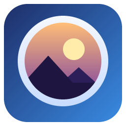
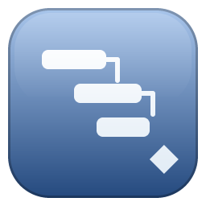
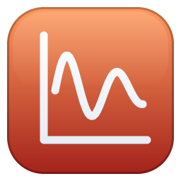
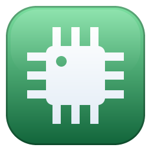
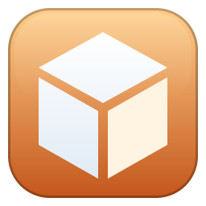

Twenty-seven free apps.
No subscription.
Photo editing, vector art, painting, video, motion graphics, audio, music, 3D, fonts, page layout, UI design and PDFs; spreadsheets, slides, documents and diagrams; and engineering apps for scheduling, computing, circuits, CAD, drafting, stress, statistics, maps and fluid flow. All made by us. Download them all for Windows, or open any app right here in your browser.
All twenty-seven apps in one installer · Windows, Mac and Ubuntu · free · or open any app in your browser below
Lumen Convert 82 free tools
Converters and pro tools other sites charge for, free in your browser: no app to install, no sign-up, and your files never leave your device.
Office apps new
Spreadsheets, presentations, documents and diagrams that open and save the files you already use (.xlsx, .pptx, .docx and draw.io), free and fully offline.
Engineering apps new
Free tools for engineers and project managers, built the same way: open them in your browser or install them on Windows. They cover the core everyday workflow of the big professional suites. They are not certified replacements for them.
Download for Windows

Just one app?
Every app also has its own installer — use the download button in its section above. Lumen Photo also comes as a portable exe.




The apps aren't code-signed yet. Windows: if SmartScreen warns the first time, click More info → Run anyway. Mac: open the .dmg, drag the app to Applications, then right-click it and choose Open the first time (or System Settings → Privacy & Security → Open Anyway). Ubuntu: double-click the .deb to install it with App Center, or run sudo apt install ./file.deb.